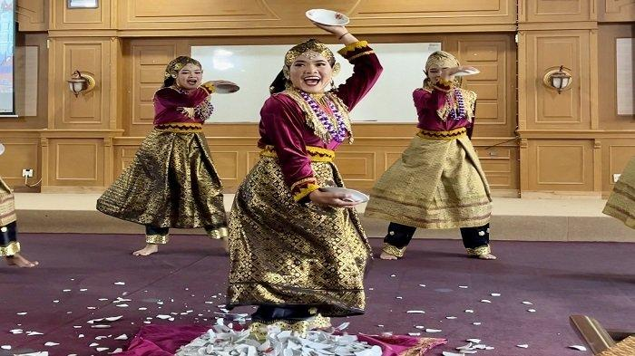
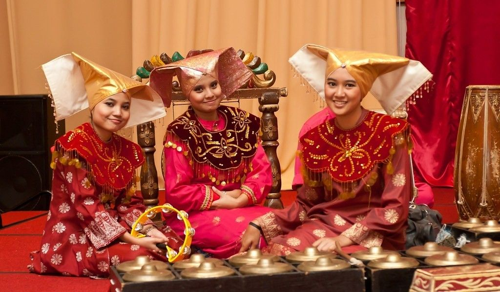
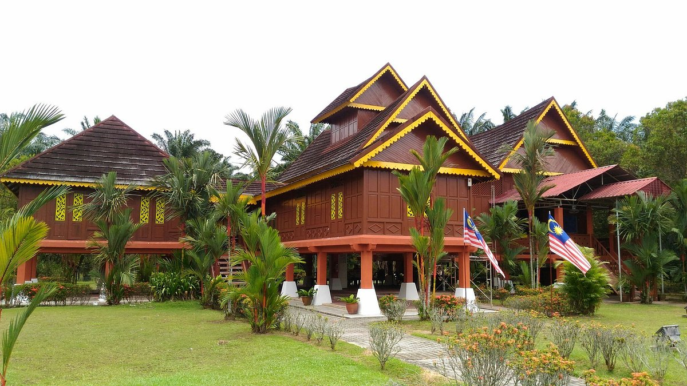
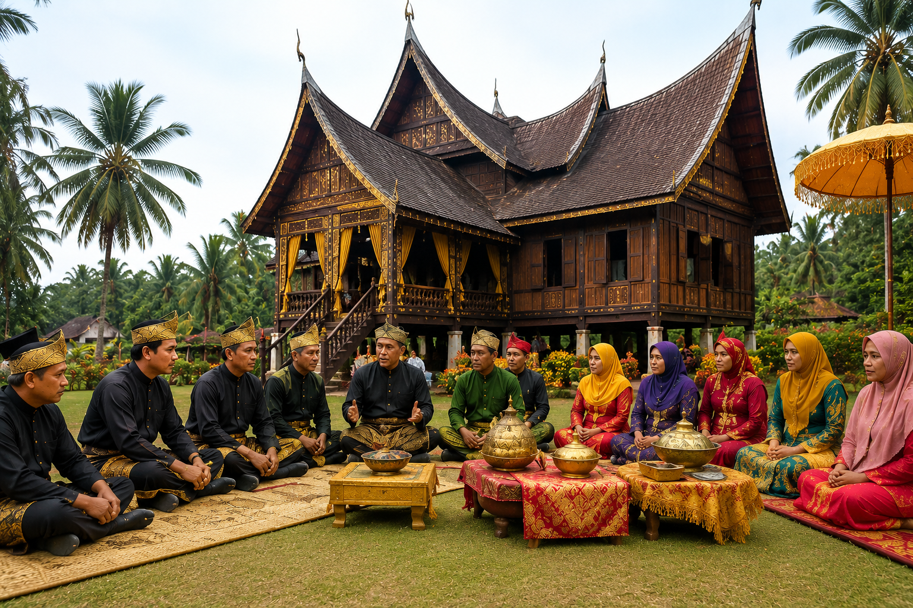

Culture of Rembau
Rembau is well known for its rich traditions, customs and cultural heritage inherited from generation to generation. Every celebration, performance and local practice reflects the identity and unity of its people.


Watch Rembau Culture in Motion
Explore the traditions, music and heritage of Rembau through this video.
Our Cultural Highlights
Discover the unique traditions, arts, cuisine and values that define the cultural identity of Rembau.
Traditions & Customs
Learn about traditional ceremonies, customs and practices that have been preserved through generations.
Learn MoreArts & Performances
Experience traditional dances, music performances and local arts that represent Rembau's heritage.
Learn MoreFood Heritage
Taste authentic Negeri Sembilan cuisine and traditional recipes passed down for many generations.
Learn MoreCommunity & Values
Discover the spirit of unity, cooperation and hospitality among the people of Rembau.
Learn MoreAbout Rembau Culture
Rembau is widely recognised for preserving the unique Adat Perpatih, a matrilineal custom inherited from the Minangkabau community. This cultural heritage promotes respect, unity and cooperation among the people while maintaining traditional values across generations.
- ✔ Adat Perpatih
- ✔ Minangkabau Heritage
- ✔ Traditional Dance & Music
- ✔ Traditional Games
- ✔ Handicrafts & Local Arts

Minangkabau Heritage
The Minangkabau people migrated from West Sumatra, bringing with them a unique architectural style characterized by horn-like curved roofs (Rumah Gadang) and a rich tradition of democratic leadership and spicy cuisine.

Adat Perpatih
A unique matrilineal customary law where lineage and property inheritance are traced through the mother's side. It emphasizes consensus, conflict resolution, and a strong sense of community belonging.